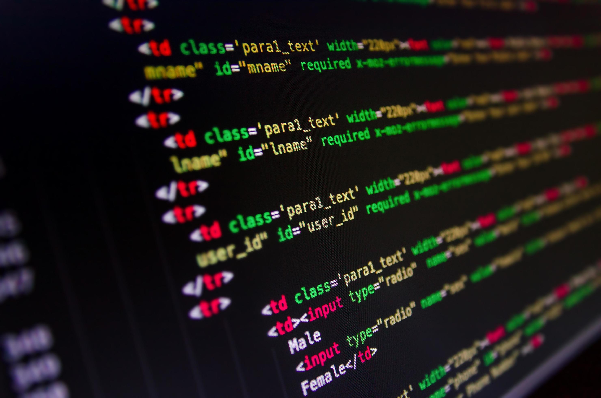
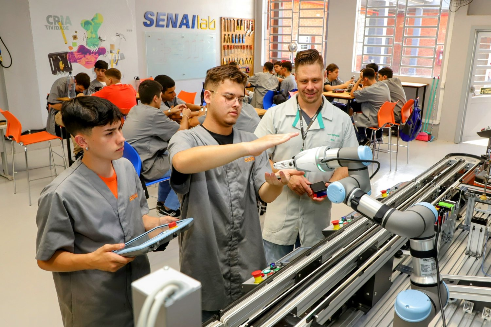
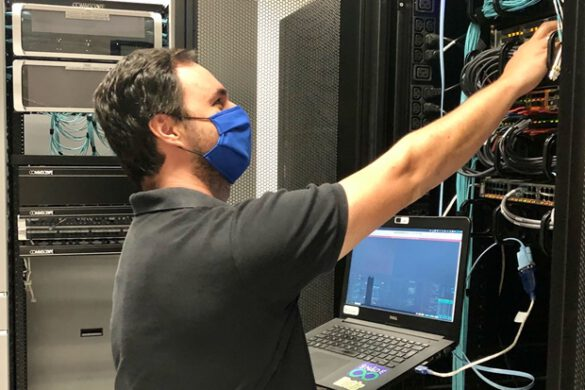

Técnico em Desenvolvimento de Sistemas
Aprenda a projetar, desenvolver e testar softwares, sites e aplicativos para o mercado de tecnologia e para a Indústria 4.0.

O SENAI é o maior complexo de educação profissional da América Latina.

Formamos profissionais para os desafios reais da indústria.
Aprenda a projetar, desenvolver e testar softwares, sites e aplicativos para o mercado de tecnologia e para a Indústria 4.0.

Domine a infraestrutura de TI, conectividade e segurança da informação para manter as empresas conectadas.
